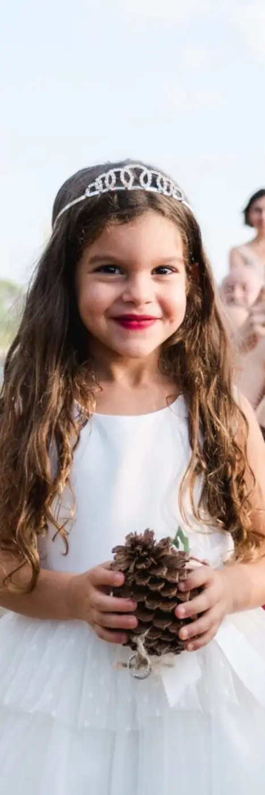
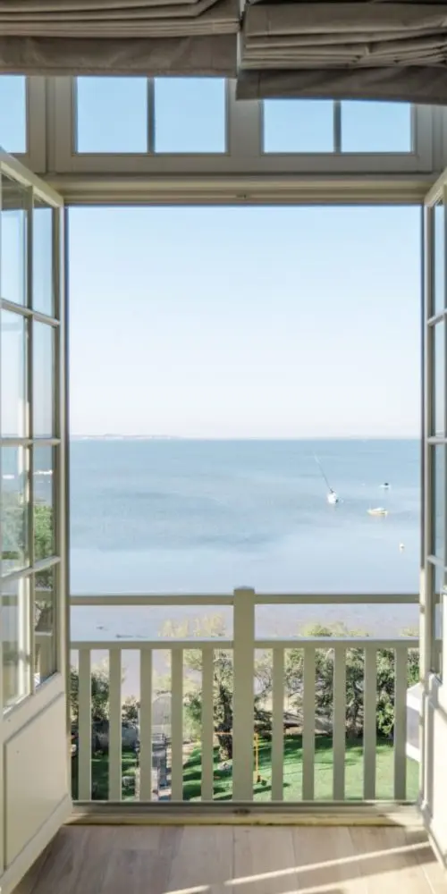
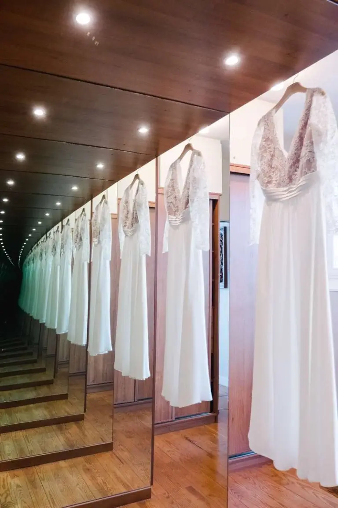
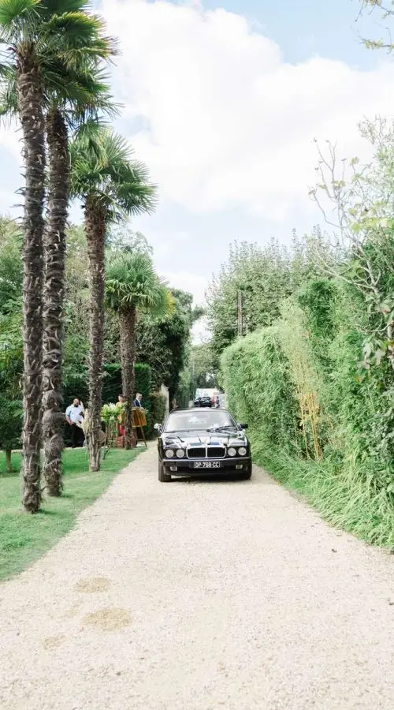

En tant que wedding planner haut de gamme, j’ai pris l’habitude de recevoir des demandes d’organisation sur ce thème. La région bordelaise est l’endroit rêvé pour des mariés voulant profiter d’une vue sur l’océan pour le plus beau jour de leur vie.
Avouez que, vous aussi, vous avez rêvé d’un mariage les pieds dans l’eau ? Et pourquoi pas au Cap Ferret, lieu idyllique dans un cadre unique.
En se concentrant plutôt sur des couleurs complémentaires à l’océan comme le rose et le pêche, ça donne une ambiance, une scénographie et une décoration très romantique pour votre mariage sur le Bassin d’Arcachon
Se marier proche de l'eau
Ceux qui sont nés au bord de l’eau ou ceux qui y vivent savent que cela crée un lien qui ne disparaît jamais.
Cela développe une envie de ne jamais vivre loin des vagues et encore moins le jour de son mariage.




Pour une parfaite union, la cérémonie laïque sur la plage est l’endroit idéal. Beaucoup d’amour, d’émotions et de tendresse ont transformé ces échanges en souvenir unique.
Je vous laisse découvrir la beauté d’un mariage au bord de l’eau en images sur mesure…
Lovely Day Event c'est plusieurs types de prestations
L'organisation de mariage
Je vais intervenir sur toutes les étapes de vos préparatifs et vous guider dans vos choix. Je suis force de proposition pour que votre mariage ne ressemble qu’à vous.
Coordination le jour J
Je serai le chef d’orchestre pour gérer les différents prestataires, la mise en place de votre décoration et le déroulement de cette belle journée.
Décoration de mariage
Créative et passionnée, je suis certifiée Wedding Designer et je conçois une ambiance scénographique qui correspond au thème de votre mariage. La décoration est comprise dans l'accompagnement Signature, ou proposée en option avec la coordination du jour J.